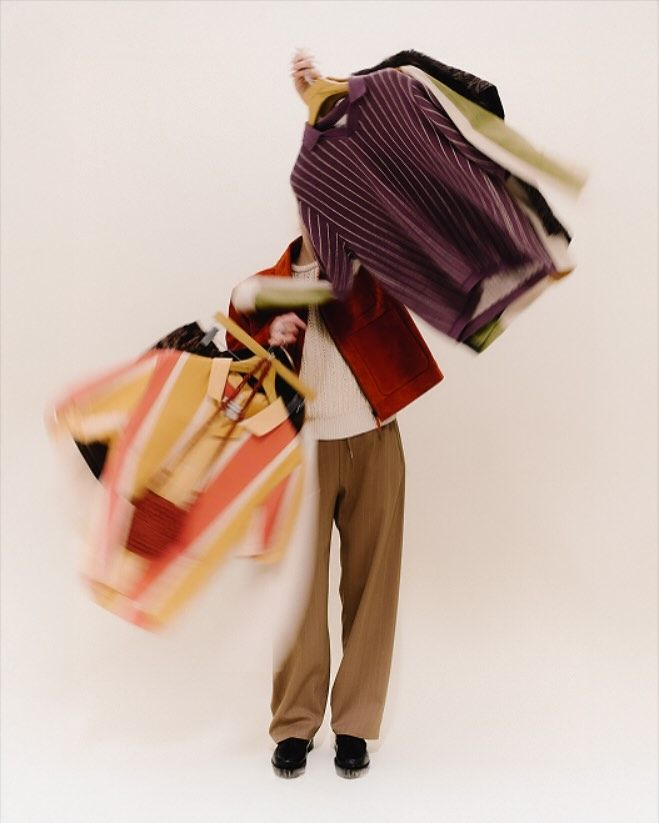
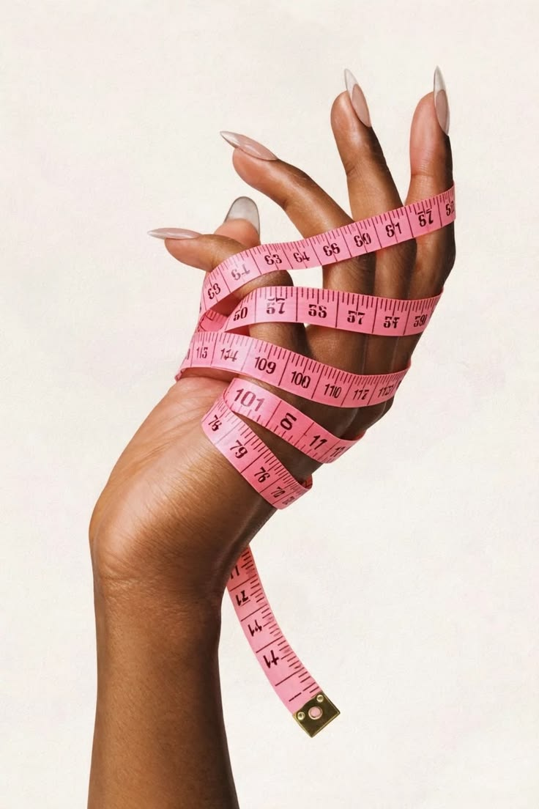

We've all stood in front of a full closet thinking, "I have nothing to wear." Choosing the right outfit, matching colors seamlessly, and feeling confident in what you wear shouldn't feel like a daily chore.
That is exactly why Wear Smart was born.
We created Wear Smart to solve everyday styling struggles and take the guesswork out of dressing up. Our goal is to make fashion accessible, effortless, and fun for everyone-no matter their style or experience.
Wear Smart is designed to be your ultimate digital fashion assistant. We help you put together stylish, cohesive outfits and master the art of color coordination.
Here is how Wear Smart supports your daily style journey:
-Color Matching Made Easy: Learn which colors naturally complement each other and discover color combinations that suit your personal style.
-Smart Outfit Combinations: Get practical ideas and recommendations on how to pair items you already own (or plan to buy).
-Occasion-Based Styling: Whether you are dressing for a casual workday, a formal event, or a weekend outing, Wear Smart helps you choose the perfect ensemble.
-Confidence Boosting: Fashion isn't just about clothes; it's about how you feel. Wear Smart ensures you step out feeling confident and well-put-together every single day.
Check out gallery for inspo.